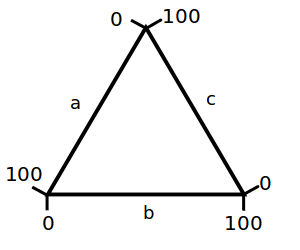
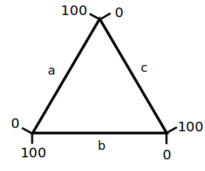
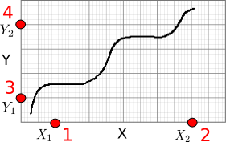
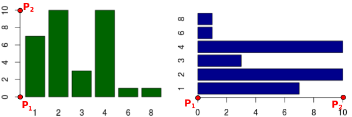
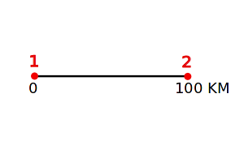
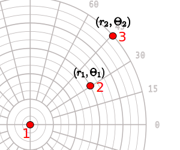
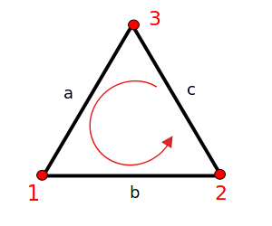
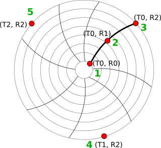
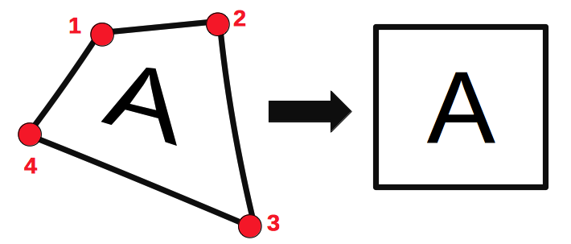

WebPlotDigitizer Lite
Convert images of graphs into data points
Welcome to WebPlotDigitizer Lite
Click Axes > Add Calibration to get started extracting data.
What is Masking?
Masking allows users to define a specific region within the graph where automatic data point extraction will be focused.
Click a masking tool to select and deselect it.
Click and drag to highlight the legends. This action will conceal the legends from data extraction.
New Project
Upload graph image file(s)
Supported file formats:
JPEG, PNG, PDF, SVG, GIF, BMP, WebP, etc.
Vergrößerungseinstllungen
|
Vergrößerung: |
Times |
|
Fadenkreuz-Farben: |
|
Skript ausführen
Lade eine Javascript-Datei um die Fährigkeiten von WebPlotDigitizer weiter zu ergänzen.
Zum Beispiel, besuche die WebPlotDigitizer repository.
Aufzeichnugstyp wählen
X- und Y-Achsenkalibration
Enter the X-values of X1 and X2:
| X1 | X2 | Logarithmisch | |
| X-Value: |
Enter the Y-values of Y1 and Y2:
| Y1 | Y2 | Logarithmisch | |
| Y-Value: |
For dates, use yyyy/mm/dd hh:ii:ss format, where ii denotes minutes
(e.g. 2013/10/23 or 2013/10 or 2013/10/23 10:15 or just 10:15).
For exponents, enter values as 1e-3 for 10^-3.
Gebe Werte für die zwei gewählten Punkte auf der Achse entlang der Balken an.
| Punkt 1 | Punkt 2 | Logarithmisch |
Map Scale Size:
Origin location:
| Punkt 1 | Punkt 2 | Logarithmisch | |
| R: | |||
| Θ: |
Im Uhrzeigersinn
Achsenorientierung
|  |  |
|
Normal |
Rückwärts |
Variablen
|
0 bis 1 |
0 bis 100 |
| Time (T0) | |
| Ranges (R0, R2) | |
| Chart Start Time (T_Start) |
|
Dataset: Variables:
*Plotly ist eine sichere Datenanalyse- und Grafik-Seite mit Zugangskontrolle. Besuche http://plot.ly für Details. |
Sortieren Sortieren nach: Reihenfolge: Filter Variable Selector: Format Datenformatierung: Nummernformatierung: Stellen: Spaltentrenner: |
X-Y Achse ausrichten

Click four known points on the axes in the order shown in red.
1. Select two known points on the X axis (X1, X2)
2. Select two known points on the Y axis (Y1, Y2)
Select a known point on the x-axis (X1)
Select a known second point on the x-axis (X2)
Select a known point on the y-axis (Y1)
Select a known second point on the y-axis (Y2)

Klicke zwei bekannte Punkte (P1, P2) auf den parallel zu den Balken verlaufenden Achsen an.

Klicke die Endpunkte der Skala auf der Karte an.

Klicke in die Mitte, anschließend auf zwei bekannte Punkte.

Klicke die drei Achsen in der oben gezeigten Reihenfolge an.

Click on five (5) points on the chart axes as shown:
WebPlotDigitizer Lite
A web-based plot digitizer based off the original WebPlotDigitizer
WebPlotDigitizer Lite uses the following version of WebPlotDigitizer:
Version 4.7
This program is distributed under the GNU Affero General Public License Version 3.
Copyright 2010-2022 Ankit Rohatgi <ankitrohatgi@hotmail.com>
https://automeris.io/WebPlotDigitizer
Selected Color:
Dominante Farben:
Die folgenden Beziehungen werden genutzt, um Bildpixel in Daten umzuwandeln.:
Export JSON
Export a JSON file containing the axes calibrations, digitized data and measurements. This JSON file can be loaded to resume work at a later time.
Project Name: .json
Import Project
Load a previously exported JSON project file
This will clear any unsaved data in the current plot.
JSON Project File:
Tastatürkürzel
Click to select a data point. The following keys can then be used to adjust the position:
| Cursor (Pfeiltasten) - | Bewege hoch/runter/rechts/links |
| Shift + Cursor - | Schnellere Bewegung |
| Q - | Nächsten Punkt wählen |
| W - | Vorherigen Punkt wählen |
| Löschen/Zurücksetzen - | Löschpunkt |
| E - | Beschriftung bearbeiten (Balkendiagramm) |
| R - |
Override value (When adjusting
non-Bar Chart points |
Beschriftung:

Klicke auf vier Ecken der Region um sie wie angezeigt zu transformieren.
Möchtest du eine bestehende Achsenkalibration bearbeiten oder einen neuen Achsentyp wählen?
Export data from all datasets
Name:
Number of Datasets:
Name:
Rename Axes Labels
X Axis:
Y Axis:
Achsen umbenennen
Name:
Image Info
Dimensions: pixels
Pages: pages
Relabel the current page number with an alphanumeric string. Optionally, relabel all page numbers in the image based on the current page (only supports integer values).
New page label:
Point Groups
|
Point groups are groups of related data points such as standard error or confidence intervals. To define a point group, enter a name in the text input below. Create additional point groups as necessary. E.g. Assume we have 3 point groups defined: Median, Standard error +1, and Standard error -1. Points would be entered in the order shown in the image to the right. For each set of points, the median value would first be recorded, then the standard error +1, and finally the standard error -1. The process would repeat for the next set of points. |
|
| Group 0: |